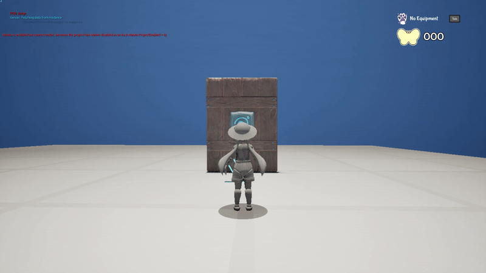

Trouble in Loomie Land
3D Co-op Platformer
Project Summary
Trouble in Loomie Land is a cutesy 3D platformer that can be played solo or co-op with a friend. Players explore colourful islands, collect items, interact with the local Loomie inhabitants, and find secrets hidden across the levels. Masks can be collected and equipped to customise your character, and a shop lets you spend collectibles on new ones.
Project Breakdown
9 Week Group Project
17 Team Members
Powered by Unreal Engine 5
Playgroundsquad, Falun
My Responsibilities
Interaction System: designed and programmed the component-based interaction framework used for every interactable in the game.
GDD Programming: wrote the programming specifications for most systems in the design document.
Generalist: level design, voiceline system, VFX, UI, shop, optimisation, and whatever needed doing.
My ContributionsMy Contributions
Interaction System
Everything in the game that has "hold E to interact" behaviour runs on a system I designed and built from scratch. It is component-based — three Actor Components that communicate via interfaces, each going on a different type of actor:
AC_InteractionTrace lives on the player. It continuously scans for nearby InteractionObjects, tells the closest one that it is being focused, and triggers activation when the player holds the interaction key long enough.
AC_InteractionObject goes on any interactable — a lever, a button, a pressure plate, an NPC. It handles the hold-to-interact timer, the outline and widget feedback, line-of-sight checking so objects can't be activated through walls, and outgoing signals to any connected Receivers. It supports multiplayer-specific variables, so a lever can stay active for 10 seconds in singleplayer but only 1 in co-op.
AC_InteractionReceiver goes on anything that should respond to interactables — doors, cages, anything that takes input. Designers drag-and-drop the interactables that should trigger it directly in the viewport. Receivers can be inverted (so an off-signal becomes an on-signal), require multiple inputs simultaneously, and one interactable can send to multiple receivers. The combination of these three components covers every interaction in the game.
I went through two significant iterations on this system during the project. I started with a parent class approach for speed, then converted it fully to Actor Components when it became clear that some actors needed other parents. Every component is extensively documented.



Voiceline System
I built the Loomie NPC voiceline system with enough flexibility that designers could express complex narrative behaviour without touching code. Voicelines are organised into sets, each with its own properties: ordered or random playback, activation conditions, and easy switching between sets based on game state. In practice this let a Loomie speak random gibberish until a door opened, then switch to an ordered set explaining how to find collectibles, then switch again to idle chatter once the collectible was picked up.
Night Island
The night island level was behind schedule and had serious performance problems when I took it on. I finished the gameplay implementation, placed assets, fixed collisions, and did a significant round of optimisation; including a roughly 300% performance improvement to the MovingObject blueprint. I also focused on shaping a winding path that takes the player through the whole level in a way that feels intentional and rewarding.
Generalist Work
Beyond the above: I wrote the programming specifications for most systems in the GDD, built a teleporter blueprint for moving players between levels, created a tag minigame, implemented a player customisation shop, integrated player animations that hadn't been hooked up, helped with a cloud shader material function alongside programmer André, and shipped a lot of builds on the final day. Not a boring project!
Check it out on itch!